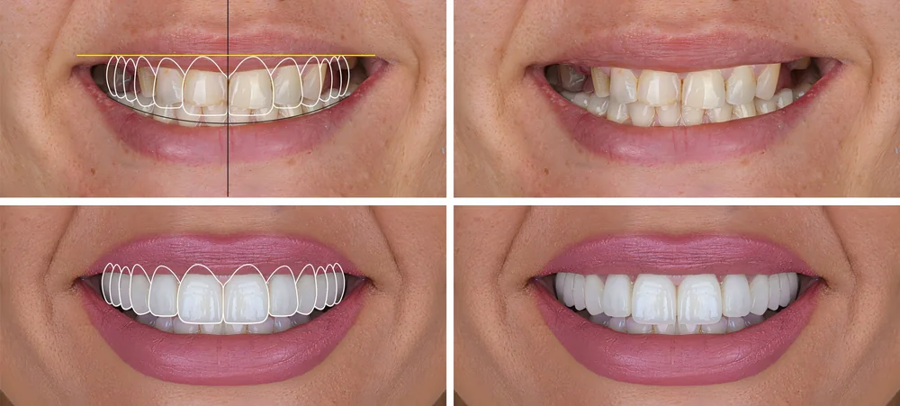
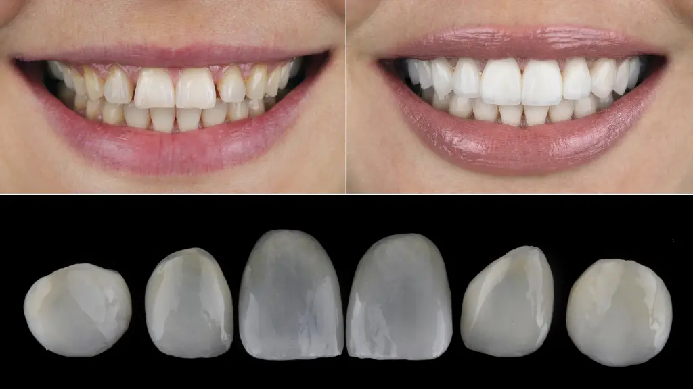
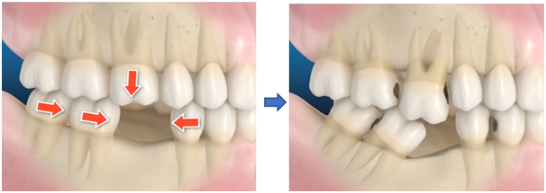

Dantų protezavimas
Atkurtos dantų funkcijos ir estetika — laminatės, vainikėliai, tiltiniai protezai, protezavimas ant implantų.
Šiuolaikinė medicina leidžia greitai, efektyviai, kokybiškai spręsti sveikatos sutrikimus. Šypsena — tai ne tik žmogaus „vizitinė kortelė", estetika, tačiau ir sveikatos ženklas. Labai dažnai sugedę dantys, negalėjimas pilnavertiškai kramtyti maisto yra kitų ligų priežastis. Taigi, jeigu džiaugtis trugdo prasta dantų būklė, estetika ar prarasti dantys — dantų protezavimas yra tai, kas gali padėti.
Kas yra dantų protezavimas?
Tai dantų gydymo bei atstatymo būdas, kurio metu atkuriami danties audiniai. Dažniausiai dantų protezavimas taikomas, kai danties audiniai yra stipriai pažeisti ėduonies arba atliktas senas nekokybiškas dantų gydymas, ir atkurti estetiką bei funkciją vien plombavimo neužtenka.
Taip pat protezavimas taikomas, kai pacientas yra praradęs vieną ar daugiau dantų. Tokiu atveju pacientai skundžiasi psichologiniu diskomfortu, prasta kramtymo funkcija, kartais netekus daugelio dantų — net ir veido pokyčiais. Tuomet sudaromas individualus gydymo planas — netekti dantys atkuriami dantų implantais, o protezavimo metu atliekamas vainikėlių gaminimas.
Vis dažniau pacientai, norintys tobulos šypsenos ir ilgaamžiškumo, kreipiasi į mūsų kliniką dėl protezavimo laminatėmis. Seniai laminatės buvo vertintos kaip trapūs, rizikingi sprendimai — šiandien jos leidžia sukurti neįtikėtiną dantų natūralumą, tvirtumą ir ilgaamžiškumą.

Kada dantis verta estetiškai plombuoti, o kada protezuoti?
Dantų plombavimas atkuria puikų estetinį vaizdą, tačiau silpnina dantį. Ypač jeigu dantys jau buvę plombuoti ir vaizdas paciento netenkina — tokiu atveju reikia pašalinti senas plombas, o tai dantį daro dar silpnesnį. Be to, plomba yra poreta medžiaga: su laiku ji traukiasi, keičia spalvą, lengviau pritraukia apnašą.
Dažnesnė alternatyva — dantų laminatės, kurios leidžia pasiekti maksimalią estetiką ir yra labai lygios (lygesnės už emalį). Netekus 50 % danties emalio, rekomenduojame protezavimą keramikiniu įklotu, vainikėliu ar užklotu — taip dantis sustiprinamas, atkuriamas estetinis vaizdas ir dantis gali tarnauti ilgus metus.
Renkantis estetines dantų laminates, reikalingas diagnostinis dantų pavaškavimas — būsimų dantų formos vizualizacija. Dantų technikas pagal burnos dantų atspaudą atlieka pavaškavimą ant specialaus gipsinio modelio. Pagamintas pavaškavimas aptariamas su pacientu — taip lengviau nuspręsti, ar matomas vaizdas tinka. Kartais, kai situacija leidžia, dantų pavaškavimą galima perkelti ant savų dantų ir šypseną „pasimatuoti".
Sutikus su sukurta techniko vizija, gydymo planas tvirtinamas, paskiriami vizitai dantų gydymui (jeigu jie reikalingi). Esant sveikiems dantims atliekama dantų preparacija, nuimami burnos dantų atspaudai ir registrai, gaminamos laikinos laminatės, kurios bus nešiojamos iki galutinių restauracijų. Paskutinio vizito metu cementuojamos nuolatinės laminatės.

Kiti protezavimo būdai
Išimami dantų protezai
Dar vadinami plokštelėmis, kurios pakeičia prarastus dantis. Išimami dantų protezai yra individualiai pritaikomi prie paciento burnos situacijos, kad atrodytų ir funkcionuotų kaip natūralūs dantys. Šiuos protezus galite patys įsidėti ir išsiimti.
Dantų vainikėliai
Dirbtiniai dantys, kurie savo išvaizda visiškai nesiskiria nuo natūralių. Pagaminami individualiai, atsižvelgiant į kitų likusių dantų dydį, spalvą bei formą. Apgaubia pažeistus paviršius, sutvirtina ir apsaugo dantį nuo lūžimo — arba tvirtinami ant implantų.
Tiltiniai protezai
Vis rečiau taikomas protezavimo būdas, kai trūksta vieno ar kelių dantų. Šalia tuščios vietos esantys dantys protezuojami vainikėliais ir sujungiami tarpine dalimi, kuri atlieka trūkstamo danties funkciją.
Kompleksinis gydymo planavimas
Daugėja pacientų, kuriems reikalingas kompleksinis gydymo planavimas. Tai reiškia, kad norint taisyklingai atkurti šypsenos grožį, kramtymo funkciją ir kitus svarbius dalykus, neužtenka vieno gydytojo kompetencijos. Reikalingi keli savo sričių specialistai, kurie vienas kitam ruošia pacientą pagal sudarytą aiškią viziją.
Vis daugėja pacientų, kurie neteko dantų ir greitai, neįsigilinę į visą reikalingą procesą, atliko tam tikras procedūras. Tačiau praėjus laikui pastebėjo, kad nesijaučia taip gerai, kaip tikėjosi, ar negavo norėto rezultato. Todėl labai svarbu pačioje gydymo pradžioje aptarti visus galimus situacijos sprendimo būdus, pasirinkti sau tinkamiausią ir pradėti gydymą.
Kas nutinka netekus danties?
Labai dažnai pastebime atvejus, kai netekęs danties ar dantų pacientas nekreipia dėmesio ir neieško gydytojo pagalbos. Tuo metu šalia tuščios ertmės esantys dantys — tiek viršutiniai, tiek apatiniai — su laiku vis labiau slenkasi į defekto pusę, apsunkindami būsimo protezavimo eigą.
Kartu tirpsta žandikaulio kaulas — implantacijos paslauga tampa ir brangesnė, ir labiau komplikuota. Be to, dažnu atveju tampa reikalingas gydytojas ortodontas, kuris atstato sąkandį ir tinkamai paruošia pacientą būsimam protezavimui.

Ar protezavimas skausmingas?
Norime jus nuraminti — bijoti nėra ko. Klinikoje naudojami nuskausminamieji. Prieš gydymą odontologai įvertina paciento būklę, būsimo gydymo trukmę bei sudėtingumą ir parenka tokį sprendimą, dėl kurio viso vizito metu pacientas jaučiasi ramus.
Nuo ko pradėti?
Visų pirma, reikalinga konsultacija pas protezuojantį gydytoją, kuris įvertina, apžiūri dantų ir burnos būklę bei sudaro gydymo planą pagal paciento norus, galimybes ir lūkesčius.
Gydymo planas yra individualus, tinkamas konkrečiam pacientui. Jeigu problema aiški ir nėra sudėtinga — gydymo planas ir eiga pristatomi iš karto, o jau kito vizito metu pradedamas gydymas. Jeigu situacija sudėtingesnė — gydymo planas ruošiamas dalyvaujant keliems specialistams (pvz., protezuojančiam gydytojui ir ortodontui arba implantologui). Kiekvienas gydymo planas yra preliminarus ir, pasikeitus aplinkybėms, gali būti keičiamas suderinus su pacientu.
Klinikoje laikomasi pagrindinių protokolų:
- Gydymas pradedamas profesionalia burnos higienos procedūra.
- Sugedusių dantų gydymas, dantų šaknų kanalų gydymas, chirurginis netinkamų dantų šalinimas.
- Ortodontinis gydymas — dantų tiesinimas, sąkandžio atstatymas.
- Implantacija (jeigu atliekamas ortodontinis gydymas — tai jo metu).
- Protezavimas ir estetinio plombavimo galimybės.
Kiek kainuoja protezavimas?
Tik atlikus pirminę apžiūrą ir sudarius tikslų gydymo planą, nustatomos dantų protezavimo kainos. Kaina gali skirtis, nes gydymo eigoje gali prireikti papildomų procedūrų, kurios reikalingos tinkamai paciento dantų būklei užtikrinti.
Priežiūra po gydymo
Labai svarbu ne tik atstatyti šypseną, bet ir išlaikyti gautą rezultatą. Rekomenduojame atlikti tinkamą dantų priežiūrą namuose, bent kartą per metus atlikti profesionalią burnos higienos procedūrą ir apsilankyti pas gydytoją odontologą. Atsižvelgdami į tai, koks dantų gydymas buvo atliktas, suteikiame visą informaciją, kad tobula šypsena galėtumėte džiaugtis ilgiau.
Gaukite kompensaciją už dantų protezavimo paslaugas
Dalis dantų protezavimo išlaidų gali būti kompensuota TLK lėšomis. „Alytaus implantologijos centras" yra sudaręs sutartį su teritorinėmis ligonių kasomis (TLK), kurios iš Privalomojo sveikatos draudimo fondo (PSDF) skiria kompensaciją dantų protezavimo išlaidoms.
Norint sužinoti, ar Jums priklauso kompensacija, kreipkitės į savo sveikatos priežiūros įstaigos (poliklinikos, prie kurios esate prisirašęs) odontologą. Jis, įvertinęs burnos ir dantų būklę, paskirs kompensaciją arba teiks siuntimą konsultacijai pas specialistą protezuojantį gydytoją. Esant sudėtingai būklei, gali būti teikiamas siuntimas gydytojų konsiliumui.
Kas gali gauti kompensaciją dantų protezavimui?
Teisę į dantų protezavimą, kompensuojamą iš PSDF, turi šie privalomuoju sveikatos draudimu apdrausti asmenys:
- Asmenys, kuriems sukako senatvės pensijos amžius
- Neįgalumą turintys asmenys
- Vaikai iki 18 metų
- Asmenys, kuriems buvo taikytas gydymas dėl burnos, veido ir žandikaulių onkologinės ligos
Kokia suma kompensuojama?
Suaugusiems asmenims kompensuojama iki 670,39 €. Pacientai, kurių apatinis žandikaulis yra bedantis arba dantys bus šalinami, turi galimybę kreiptis dėl gydytojų konsiliumo ir gauti padidintą kompensaciją, kuri siekia iki 2 062,70 €. Pacientams, kuriems diagnozuotas didesnis nei II laipsnio patologinis visų dantų nudilimas (daugiau kaip 1/3 danties vainiko aukščio) — iki 670,39 €.
Jūsų gydytojas
Rytis Ikanevičius
Protezuojantis gydytojas
Atlieka visus su protezavimu susijusius darbus — dantų atkūrimą ant implantų, estetinį protezavimą laminatėmis, sąkandžio aukščio kėlimo darbus. Vertina ryšį su kiekvienu pacientu ir nuolat tobulina profesines žinias kursų bei konferencijų metu.
Skaityti daugiau apie gydytoją →